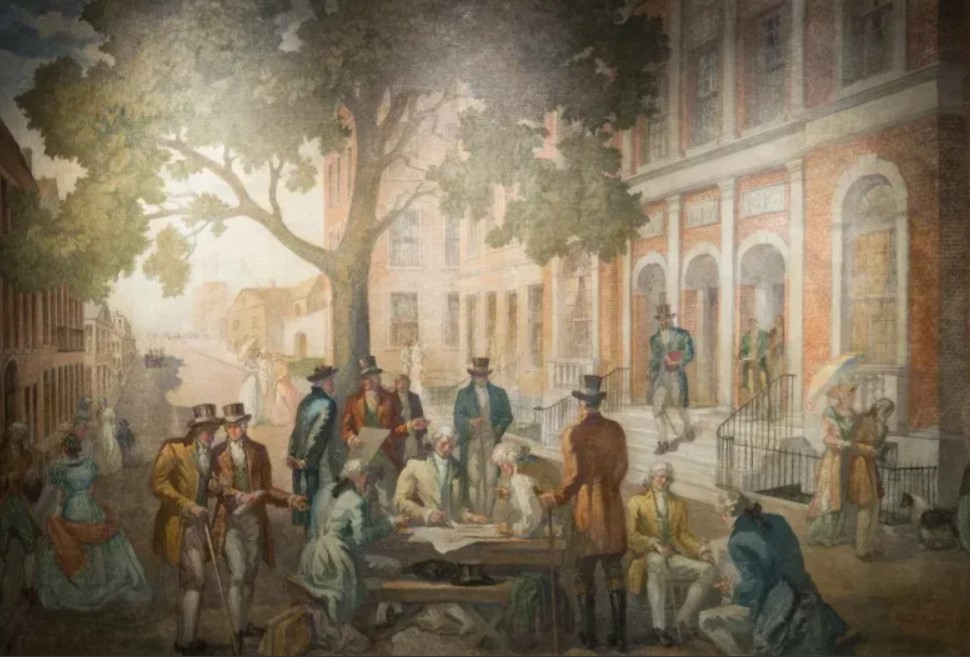

Los mercados y las bolsas internacionales.
Wall Street y Nasdaq
- NYSE: más de 2.000 empresas (entre 2.400 y 2.900 según la fuente)
- Nasdaq: +5.000 empresas
- Índices: Dow Jones, S&P 500, Nasdaq 100
Objetivo
Entenderás no como un lugar abstracto donde "suben y bajan números", sino como el centro nervioso de la economía global: con historia, con poder desproporcionado y con consecuencias reales para cualquier persona del planeta que tenga un empleo, un ahorro o una pensión.
Explicación
Corría el año 1792. En la calle Wall Street de Manhattan —que en aquella época era literalmente una calle cortada por una muralla de madera que los colonos holandeses habían construido para proteger la ciudad— se reunieron 24 corredores de bolsa bajo un árbol. No había edificio, no había pantallas, no había tecnología. Solo 24 hombres con una idea: crear un mercado organizado donde comprar y vender valores de forma fiable.
Ese acuerdo, conocido como el —el acuerdo del árbol de sicómoro— fue el origen de lo que hoy es la Bolsa de Nueva York, la NYSE: el mayor mercado financiero del mundo.
La NYSE es la bolsa tradicional. Más de dos siglos de historia. Más de 2.000 empresas cotizadas, entre ellas los grandes nombres de la industria, las finanzas, la energía y el consumo —Coca-Cola, JPMorgan, ExxonMobil, Procter & Gamble. Es el hogar del , uno de los índices más antiguos y reconocibles del mundo, que agrupa a 30 empresas industriales históricas. Y del , que con sus 500 empresas más importantes representa aproximadamente el 80% de la capitalización del mercado americano.

El nació en 1971 con una idea revolucionaria: ser la . Sin parqué físico, sin operadores con chaqueta de colores gritando órdenes. Solo tecnología. Y ese ADN tecnológico se refleja en sus empresas: Apple, Microsoft, Amazon, Alphabet, Meta, Nvidia. Más de 5.000 compañías. El Nasdaq 100 —el índice de las 100 mayores— es el termómetro de la tecnología global.
Aquí hay un detalle humano que vale la pena compartir: la NYSE, con más de 230 años de historia dominada por hombres, tiene desde 2022 como presidenta a Lynn Martin, licenciada en ciencias informáticas y estadística, con formación como científica de datos y trayectoria en IBM. Es la segunda mujer en presidir la institución en su historia.
Analogía
Imaginen el sistema nervioso del cuerpo humano. El cerebro envía señales que en milisegundos activan músculos, órganos y reacciones en todo el cuerpo. Wall Street funciona igual para la economía global.
Cuando Wall Street abre cada mañana —a las 15:30 hora española— los mercados europeos ya llevan horas operando y han estado mirando los futuros americanos para anticipar la dirección del día. Cuando Wall Street cierra, los mercados asiáticos abren horas después con los datos de Nueva York como primera referencia.
Un dato que sorprende a mucha gente: el Dow Jones industrial superó los 50.000 puntos en 2025. Cuando fue creado en 1896, su valor inicial era de 40,74 puntos. Si eso no ilustra el crecimiento del capitalismo moderno en un siglo y cuarto, no sé qué lo hace.
Contexto financiero real
Los tres grandes índices americanos —, y — no son equivalentes ni intercambiables. Cada uno cuenta una historia diferente:
- El es histórico y reconocible, pero técnicamente imperfecto: pondera sus 30 empresas por precio de la acción, no por capitalización. Por eso los analistas serios lo usan más como referencia simbólica que como indicador técnico.
- El es el benchmark profesional: 500 empresas, ponderadas por capitalización. Representa la economía americana de forma mucho más representativa. Cuando los gestores de fondos dicen "batí al mercado", se refieren a superar este índice.
- El es el índice del futuro —o al menos del presente tecnológico. En 2025, superó los 5 billones de dólares de capitalización —convirtiéndose en la empresa manufacturera de chips de inteligencia artificial más importante del momento—, lo que impulsó al Nasdaq a máximos históricos.
Y hay un dato sociológico revelador: según , el 61% de los estadounidenses invierte en el mercado de valores, ya sea a través de acciones directas, fondos o planes de pensiones. En España, ese porcentaje es significativamente menor —lo que explica, en parte, por qué Wall Street genera más pánico o euforia en EE.UU. que en Europa cuando se mueve.
Complemento actualizado
(Datos recientes — fuentes: EFE/Infobae, Yahoo Finance, NYSE — mayo 2026)
Los mercados americanos han protagonizado cifras históricas en el período reciente:
- Wall Street cerró 2025 con avances generalizados: el S&P 500 subió en torno al 15%, el Nasdaq avanzó alrededor de un 17% y el Dow Jones creció un 14%.
- En mayo de 2026, el S&P 500 alcanzó nuevos máximos históricos situándose en torno a los 7.460 puntos, impulsado por Nvidia, que superó los 5,5 billones de dólares de capitalización bursátil —en sentido español— convirtiéndose en la primera empresa en alcanzar esa cota en la historia.
- El Dow Jones superó los 50.000 puntos en las mismas sesiones, mientras el cotizaba por encima de los 26.600 enteros.
- La NYSE lideró el mercado de OPVs en 2025, siendo la bolsa elegida para siete de las diez mayores salidas a bolsa del año.
⚠ Los datos históricos sobre la fundación del NYSE, el perfil de Lynn Martin y las cifras de inversión de los americanos (Gallup) pertenecen al contenido original de la presentación. Los datos de rendimiento 2025-2026 son información actualizada de fuentes externas.
Preguntas difíciles y respuestas
«Si el Dow Jones solo tiene 30 empresas y pondera por precio, ¿por qué sigue siendo tan seguido y citado en los medios?»
Por la misma razón que seguimos mirando el reloj analógico aunque el digital sea más preciso: el Dow Jones lleva más de 130 años siendo la referencia bursátil americana, y esa historia lo convierte en un símbolo cultural. Para el inversor profesional, el S&P 500 es el indicador real. Pero para el ciudadano de a pie —y para los titulares de prensa—, el Dow Jones es el número que representa a Wall Street. No es el mejor indicador técnico, pero es el más reconocible.
«¿Es posible que el Nasdaq esté en una burbuja por culpa de la inteligencia artificial, igual que ocurrió con las puntocom en el año 2000?»
Es la pregunta que se hacen los mejores analistas del mundo. Las similitudes con el año 2000 existen: valoraciones muy altas y concentración del mercado en pocas empresas tecnológicas. Pero hay diferencias importantes: las empresas que hoy lideran el Nasdaq —Apple, Microsoft, Nvidia— tienen beneficios reales, flujos de caja masivos y posiciones dominantes consolidadas. En el año 2000, muchas puntocom cotizaban a precios desorbitados sin haber ganado un solo dólar. La valoración es alta hoy, sí; pero las empresas son reales. El riesgo existe, pero no es idéntico al de 2000.
Autoevaluación
¿Qué fue el Buttonwood Agreement y qué originó?
El Buttonwood Agreement fue firmado el 17 de mayo de 1792 por 24 corredores de bolsa bajo un árbol de sicómoro (buttonwood) en el número 68 de Wall Street. Ese sencillo pacto de dos frases —negociar solo entre ellos y cobrar comisión fija— fue el acta de nacimiento de la NYSE, hoy el mayor mercado financiero del mundo.
La respuesta correcta es: el pacto de 1792 firmado por 24 corredores bajo un árbol en Wall Street, que dio origen a la NYSE. El árbol era un sicómoro, llamado buttonwood en inglés. Ese acuerdo estableció las primeras reglas de un mercado organizado en América y es el origen directo de la Bolsa de Nueva York.
Transición
Wall Street es el escenario. Los índices son el marcador. Pero, ¿cuándo nació todo esto? ¿Dónde se inventó el concepto de bolsa de valores? La respuesta nos lleva hasta Ámsterdam en el año 1602.